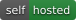
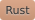
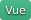

README.mdxkx121029 / xkx121029
👋 Hi, I'm xkx121029

happy～happy～happy～ · 自托管玩家 · 什么都想自己整一个
🚀 IMPORTANT
NOW · 正在推 Happy Phone Agent 和 HappyClaw🎯 主推项目
🤖 Happy Phone Agent
基于 AI 的 Android 智能体，自动操控手机完成复杂任务。

→ github.com/xkx121029/Phtomt · ⭐ 3 stars
🦀 HappyClaw
📝 NOTE
下一个主推项目，正在整。GitHub 上暂时查不到公开仓库，先占位、不编链接，开源了立刻补上。🖼 项目掠影
↑ 图片是 GitHub 官方生成的仓库社交预览卡，点图直达仓库。已下载到本地，不依赖第三方服务。👋 关于我
大连，一个人把想法从 0 整到能跑。30 个开源项目，几乎全是从零起的，名字基本都以 happy 开头。
- 🧠 给 AI 造工具：自托管搜索 API（14 引擎聚合 + RRF 融合排序）、OpenAI 兼容模型中转、内置 MCP / ACP 的网盘工作区、能自己操控手机的 Android 智能体
- 📱 客户端全线：Kotlin / Jetpack Compose、C# / WPF、Tauri 2 + Vue、Flutter、纯 Rust 写的 Windows TSF 编程输入法
- 🖥 自托管 & 运维：私有云盘、统一身份枢纽（OIDC / Ed25519 / WebRTC 信令）、ARM64 上用 Docker + QEMU 跑 Windows
- 🎮 也写玩具：Three.js 单文件 2.5D 农场、3D 自动驾驶训练、AI 闯关、代码动画生成器
- 🧩 偏好很固定：零依赖、单文件、双击即玩、自己能托管；先跑通再抠体验，UI 不漂亮不收工
一句话总结：「能不能自己整一个？」——能，就整了。
🧰 技术栈


| 领域 | 用到的东西 |
|---|---|
| AI / 给 AI 用的基建 | 零 API Key 搜索 API（14 引擎 + RRF 融合排序）、OpenAI 兼容中转、MCP / ACP / REST 端点、OIDC / Ed25519 许可证、WebRTC 信令 |
| 后端 | Python、Go（单文件二进制 + 内嵌 Web 面板）、Node.js（含 node:sqlite）、Gin |
| 桌面 / 移动 | Kotlin + Jetpack Compose、C# / WPF（.NET 8 + SkiaSharp）、Tauri 2 + Vue、Flutter / Dart、Rust + windows-rs、C++ |
| 前端 / 3D | HTML / JS / TS、Three.js、WebView、纯前端零构建、React + Vite + TailwindCSS |
| 基建运维 | Docker、ARM64、QEMU + QMP + noVNC、P2P / 局域网同步、私有云、WebRTC |
| 代码工具 | Compose 源码 → 统一 IR → 浏览器渲染、代码 → 编写动画 → 导出视频 |
📊 数据 & 项目版图

| 🤖 AI & 智能体 | 🔧 自托管 / 基建 |
|---|---|
5 个项目Phtomt · AioShell · HappyBrowser | 10 个项目happy-search · happy-relay · happy-one · wharf |
| 📱 Android / 客户端 | 🖥 桌面 / 工具 |
|---|---|
5 个项目HappyLook · Clapper · happy_potplayer | 6 个项目happy_clean · happy_shurufa · exam-bell |
| 🎮 3D / 小游戏 | 🌐 Web / CMS |
|---|---|
3 个项目windfield-farm · AI_car · ai-chuangguan | 1 个项目happy_home |
🗺 项目关系图（GitHub 网页端原生渲染，展开可见）
```mermaid flowchart LR ME["xkx121029"] --> AI["AI / 智能体 · 5"] ME --> SELF["自托管 / 基建 · 10"] ME --> MOBILE["Android / 客户端 · 5"] ME --> DESK["桌面 / 工具 · 6"] ME --> GAME["3D / 小游戏 · 3"] ME --> WEB["Web / CMS · 1"] ```本地预览器不渲染 Mermaid，这里显示源码；GitHub 网页端会自动画成流程图。
📦 全部项目
展开全部 30 个开源项目
🎯 主推
Happy Phone Agent / Phtomt
HappyClaw · 仓库待补🤖 AI & 智能体
🔧 自托管 / 基建
happy-searchhappy-relayhappy-onewharfhappy_html_puterhappy-app-markethappy-cloudhappy-linux-winhappy_yuankongxmtb
📱 Android / 客户端
🖥 桌面 / 工具
🎮 3D / 小游戏
🌐 Web / CMS
📫 找得到我
- 🌐 个人站 → https://linshuxu.pages.dev
- 📺 B 站 → space.bilibili.com/3546846012115408
- 💬 QQ 号 → qm.qq.com/q/e0EttbDdyU
- 💡 自托管、AI 基建、Android / 桌面，以及一切「能不能自己整一个」的话题，开 Issue 聊就行
⚠️ 这版和上一版的区别（预览页专用，不会出现在 README 里）
- 持续更新：
.github/workflows/refresh-assets.yml每 6 小时在 GitHub Actions 的境外 runner 上跑scripts/refresh-assets.mjs，重抓访客数 / 连续提交 / 官方仓库封面，并按 GitHub API 实时数据重生成「项目数 / fork / star」徽章；只有内容变化才提交，README 里的?v=版本号同步更新用于破图片缓存。也能在 Actions 页面手动触发。 - 做法换了：不再手写 SVG，也不再让页面实时请求第三方图片服务 —— 把服务生成的图片全部下载到
assets/，README 用该目录下的相对路径引用。GitHub 自家域名加载，能打开 GitHub 就能显示。 - 实测能下：shields.io 最简徽章 18 张、skillicons 明暗图标条、streak 连续提交卡、komarev 访客计数、readme-typing-svg 打字机、GitHub 官方头像 + 5 张官方仓库 OG 封面。
- 实测放弃：capsule-render、github-readme-stats、activity-graph（vercel 系全 000）、gh-card.dev、ghchart；所以没有头图 / 统计总卡 / 贡献图，改用 GitHub 原生 Alert + 表格 + 折叠 Mermaid 顶上。
- 注意：访客数、连续提交、仓库封面都是下载瞬间的快照，不会自动更新；OG 图曾遇 429 限流，换缓存 key 后补齐。全部 29 个素材见 assets.html。
- 上线：把
README.md+ 整个assets/目录一起推到xkx121029/xkx121029根目录。纯文本零图兜底版在README-plain.md。